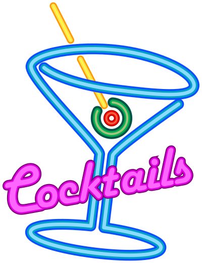
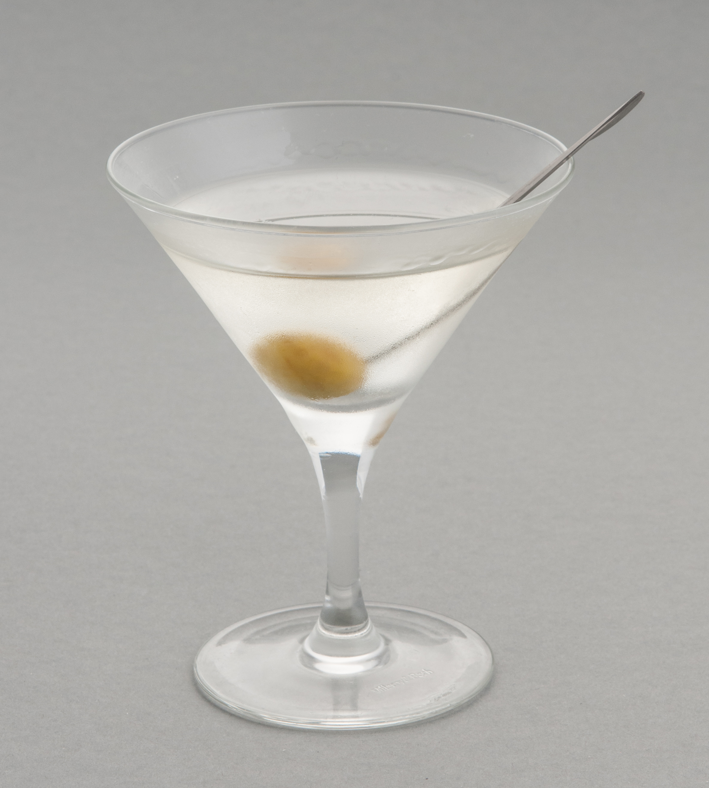

History of Cocktails
A cocktail is an alcoholic
mixed drink. Most commonly, cocktails
are
either a single spirit or a combination of spirits, mixed with other ingredients such as juices,
flavored syrups, tonic water, shrubs, and bitters. Cocktails vary widely across regions of the
world, and many websites publish both original recipes and their own interpretations of older
and
more famous cocktails. The origins of the word "cocktail" have been debated. The first written
mention of "cocktail" as a beverage appeared in The Farmers Cabinet, 1803 in the United States.
The
first definition of a cocktail as an alcoholic beverage appeared three years later in The
Balance
and Columbian Repository (Hudson, New York) May 13, 1806.Traditionally, cocktail ingredients
included spirits, sugar, water and bitters, however, this definition evolved throughout the
1800s,
to include the addition of a liqueur. In 1862 Jerry Thomas published a bartender's guide called
How
to Mix Drinks; or, The Bon Vivant's Companion which included 10 cocktail recipes using bitters
to
differentiate from other drinks such as punches and cobblers. Cocktails continued to evolve and
gain
popularity throughout the 1900s, with the term eventually expanding to cover all mixed drinks.
In
1917 the term "cocktail party" was coined by Mrs. Julius S. Walsh Jr. of St. Louis, Missouri.
With
wine and beer being less available during the Prohibition in the United States (1920-1933),
liquor-based cocktails became more popular due to accessibility, followed by a decline in
popularity
during the late 1960s.
The early to mid-2000s saw the rise of cocktail culture through the style of mixology which mixes
traditional cocktails and other novel ingredients. By 2023, the so-called "cocktail in a can"
had
proliferated (at least in the United States) to become a common item in liquor stores. In the
modern
world and the Information Age, cocktail recipes are widely shared online on websites. Cocktails
and
restaurants that serve them are frequently covered and reviewed in tourism magazines and guides.
Some cocktails, such as the Mojito, Manhattan, and Martini have become staples in both
restaurants and pop culture phenomena.
Usage and related terms

The term "cocktail" can refer to a wide variety of drinks; it is typically a mixed drink
containing
alcohol.
When a mixed drink contains only a distilled spirit and a mixer, such as soda or fruit juice, it
is
a highball. Many of the International Bartenders Association Official Cocktails are highballs.
When
a mixed drink contains only a distilled spirit and a liqueur, it is a duo, and when it adds
cream or
a cream-based liqueur, it is a trio. Additional ingredients may be sugar, honey, milk, cream,
and
various herbs.
Mixed drinks without alcohol that resemble cocktails can be known as "zero-proof" or "virgin"
cocktails or "mocktails".
Development
There is a lack of clarity on the origins of cocktails. Traditionally cocktails were a mixture
of spirits, sugar, water, and bitters. By the 1860s, however, a cocktail frequently included a
liqueur.
The first publication of a bartenders' guide which included cocktail recipes was in 1862 - How
to
Mix Drinks; or, The Bon Vivant's Companion, by "Professor" Jerry Thomas. In addition to recipes
for
punches, sours, slings, cobblers, shrubs, toddies, flips, and a variety of other mixed drinks
were
10 recipes for "cocktails". A key ingredient differentiating cocktails from other drinks in this
compendium was the use of bitters. Mixed drinks popular today that conform to this original
meaning
of "cocktail" include the Old Fashioned whiskey cocktail, the Sazerac cocktail, and the
Manhattan
cocktail.
The ingredients listed (spirits, sugar, water, and bitters) match the ingredients of an Old
Fashioned, which originated as a term used by late 19th-century bar patrons to distinguish
cocktails made the "old-fashioned" way from newer, more complex cocktails.
In the 1869 recipe book Cooling Cups and Dainty Drinks, by William Terrington, cocktails are
described as:
Cocktails are compounds very much used by "early birds" to fortify the inner man, and by those
who
like their consolations hot and strong.
The term highball appears during the 1890s to distinguish a drink composed only of a distilled
spirit and a mixer.
Published in 1902 by Farrow and Jackson, "Recipes of American and Other Iced Drinks" contains
recipes for nearly two dozen cocktails, some still recognizable today.
The first "cocktail party" ever thrown was allegedly by Julius S. Walsh Jr. of St. Louis,
Missouri,
in May 1917. Walsh invited 50 guests to her home at noon on a Sunday. The party lasted an hour
until
lunch was served at 1 p.m. The site of this first cocktail party still stands. In 1924, the
Roman
Catholic Archdiocese of St. Louis bought the Walsh mansion at 4510 Lindell Boulevard, and it has
served as the local archbishop's residence ever since.
During Prohibition in the United States (1920-1933), when alcoholic beverages were illegal,
cocktails were still consumed illegally in establishments known as speakeasies. The quality of
the
liquor available during Prohibition was much worse than previously. There was a shift from
whiskey to gin, which does not require aging and is, therefore, easier to produce illicitly.
Honey, fruit juices, and other flavorings served to mask the foul taste of the inferior liquors.
Sweet cocktails were easier to drink quickly, an important consideration when the establishment
might be raided at any moment. With wine and beer less readily available, liquor-based cocktails
took their place, even becoming the centerpiece of the new cocktail party.
Cocktails became less popular in the late 1960s and through the 1970s, until resurging in the
1980s
with vodka often substituting for the original gin in drinks such as the martini. Traditional
cocktails began to make a comeback in the 2000s, and by the mid-2000s there was a renaissance of
cocktail culture in a style typically referred to as mixology that draws on traditional
cocktails
for inspiration but uses novel ingredients and often complex flavors.

{kind=link}